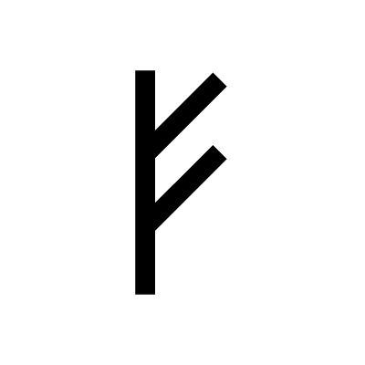
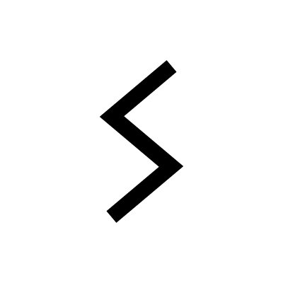

Runes
Algiz

Algiz is the rune of protection and defense. It is a good sign to see in a reading.
Ansuz
Ansuz is the rune of communication and wisdom. It is a good sign to see in a reading.
Berkanan

Berkanan is the rune of growth and fertility. It is a good sign to see in a reading.
Dagaz

Dagaz is the rune of breakthrough and transformation. It is a good sign to see in a reading.
Ehwaz
Ehwaz is the rune of movement and progress. It is a good sign to see in a reading.
Eiwaz
Eiwaz is the rune of strength and endurance. It is a good sign to see in a reading.
Fehu
Fehu is the rune of wealth and prosperity. It is a good sign to see in a reading.
Gebo
Gebo is the rune of gifts and partnerships. It is a good sign to see in a reading.
Hagalaz
Hagalaz is the rune of disruption and chaos. It is a good sign to see in a reading.
Ingwaz
Ingwaz is the rune of fertility and new beginnings. It is a good sign to see in a reading.
Isa
Isa is the rune of stillness and patience. It is a good sign to see in a reading.
Jera
Jera is the rune of harvest and reward. It is a good sign to see in a reading.
Kaunan
Kaunan is the rune of creativity and inspiration. It is a good sign to see in a reading.
Laguz
Laguz is the rune of intuition and dreams. It is a good sign to see in a reading.
Mannaz

Mannaz is the rune of humanity and community. It is a good sign to see in a reading.
Naudhiz
Naudhiz is the rune of need and necessity. It is a good sign to see in a reading.
Othala

Othala is the rune of inheritance and home. It is a good sign to see in a reading.
Pertho
Pertho is the rune of fate and chance. It is a good sign to see in a reading.
Raidho
Raidho is the rune of travel and movement. It is a good sign to see in a reading.
Sowilo
Sowilo is the rune of success and victory. It is a good sign to see in a reading.
Thurisaz
Thurisaz is the rune of protection and defense. It is a good sign to see in a reading.
Tiwaz
Tiwaz is the rune of justice and honor. It is a good sign to see in a reading.
Uruz
Uruz is the rune of strength and courage. It is a good sign to see in a reading.
Wunjo
Wunjo is the rune of joy and happiness. It is a good sign to see in a reading.